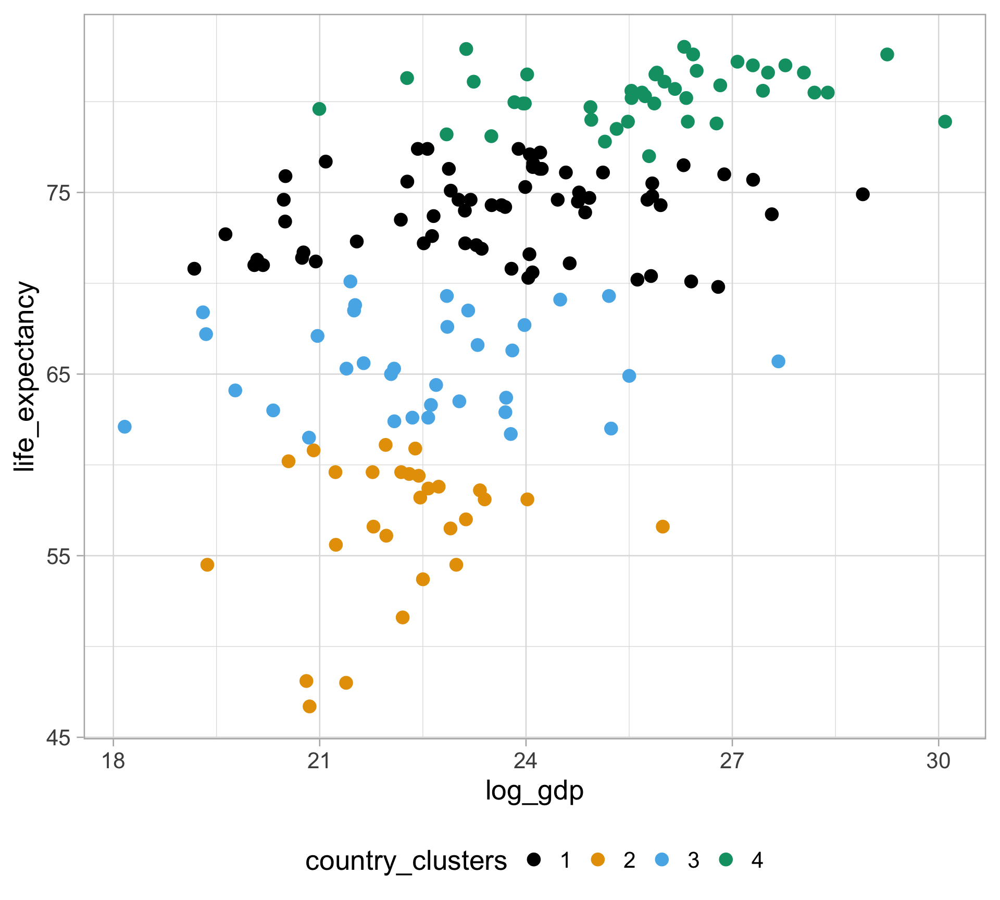
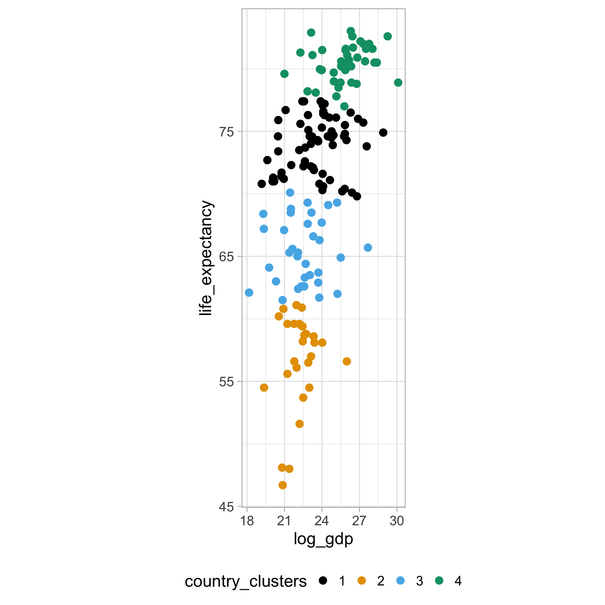
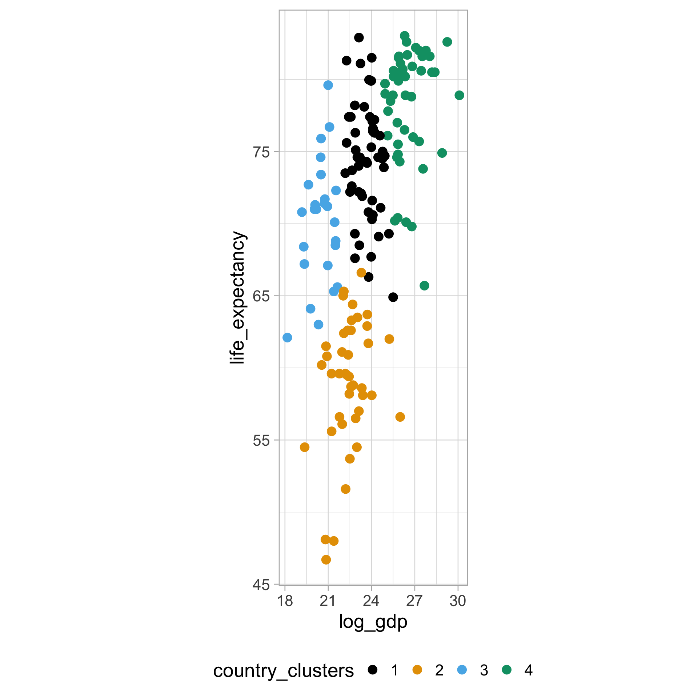
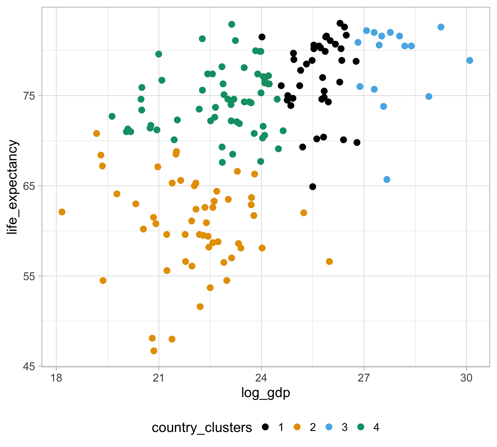
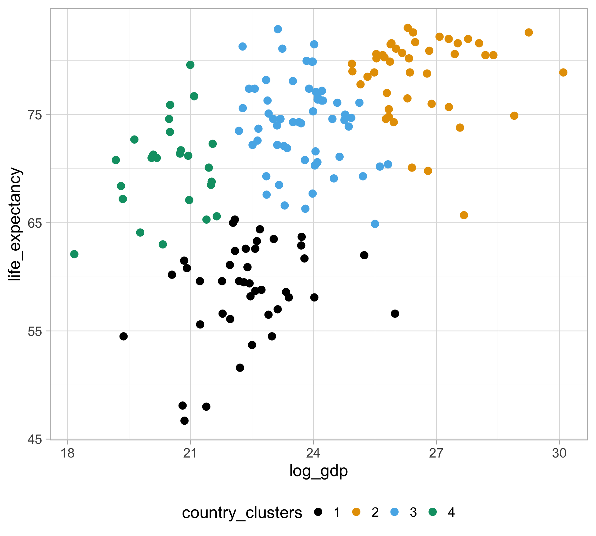
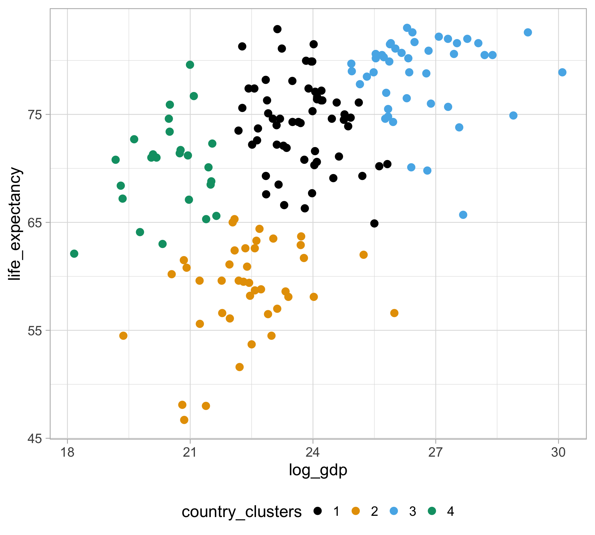
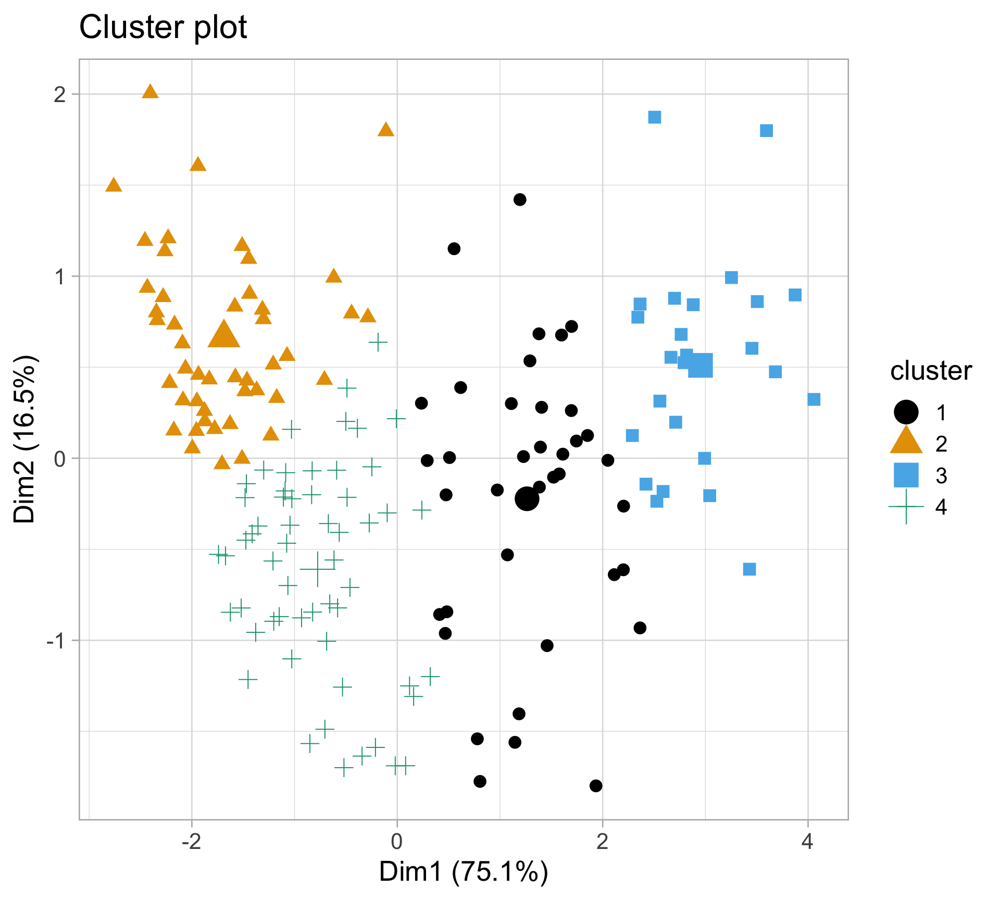
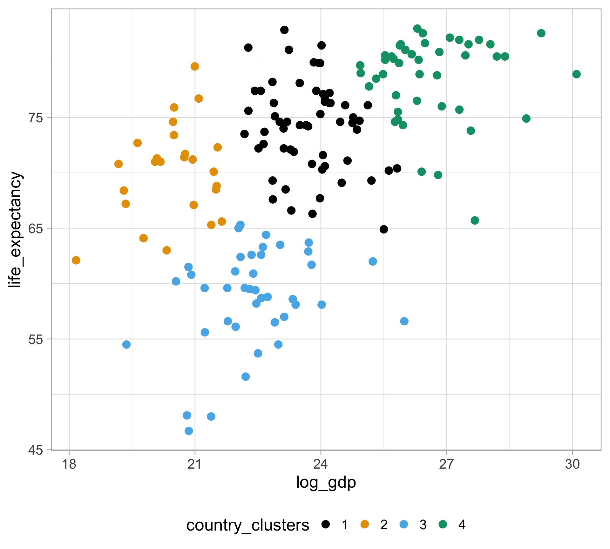
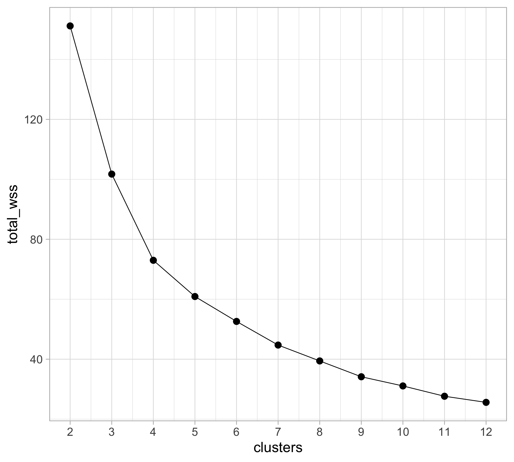
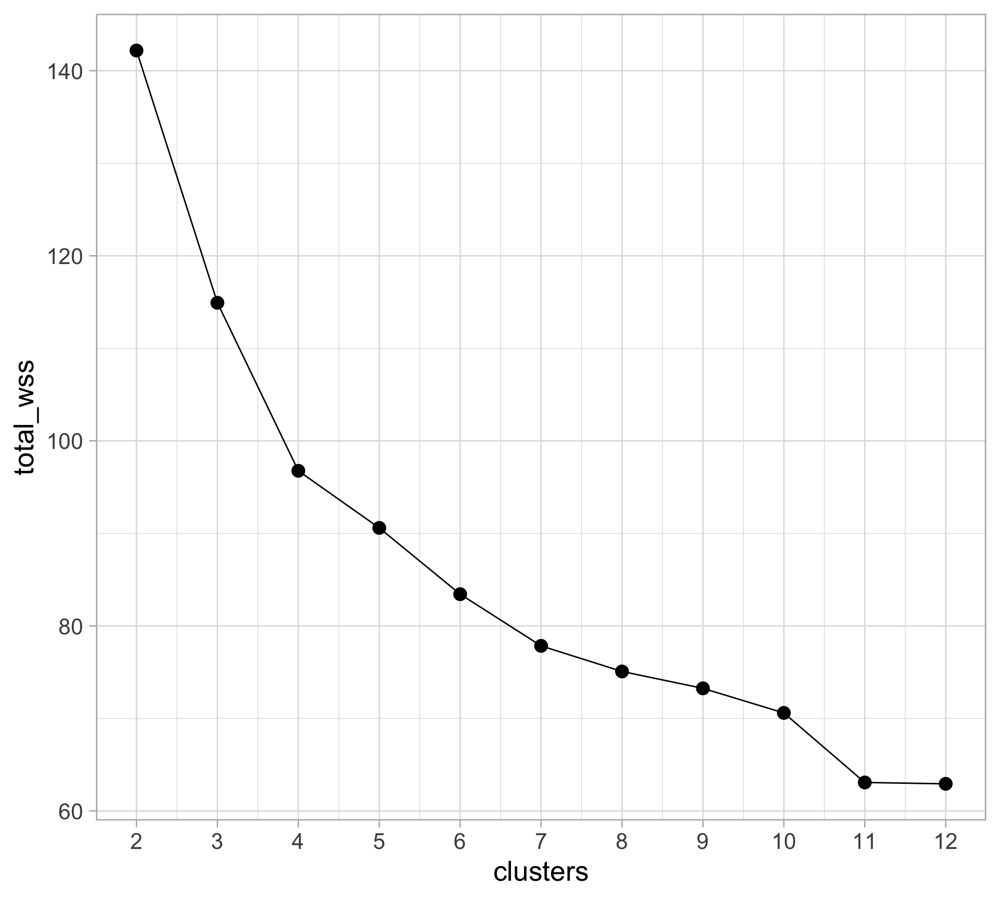

In unsupervised learning, we are only given a (big) data matrix that are not labeled
Dimension reduction: Can we meaningfully reduce the dimension of the data either so we can visualize it, and potentially do better supervised learning with it?
PCA answers this questions by finding “interesting directions” and projecting the data on to those directions
Besides dimension reduction, clustering is another fundamental problem in unsupervised learning
Clustering refers to a very broad set of techniques for finding subgroups, or clusters, in a data set — ISLR
Goals: partition of the observations into distinct clusters so that
observations within clusters are more similar to each other
observations in different clusters are more different from each other
This require characterizing the distance between observations
But how do we define “distance” beyond 2D data?
Let \(\boldsymbol{x}_i = (x_{i1}, \dots, x_{ip})\) be a vector of \(p\) features for observation \(i\)
Question of interest: How “far away” is \(\boldsymbol{x}_i\) from \(\boldsymbol{x}_j\)?
When looking at a scatterplot, we’re using Euclidean distance \[d(\boldsymbol{x}_i, \boldsymbol{x}_j) = \sqrt{(x_{i1} - x_{j1})^2 + \dots + (x_{ip} - x_{jp})^2}\]
There’s a variety of different types of distance metrics: Manhattan, Mahalanobis, Cosine, Kullback-Leibler, Hellinger, Wasserstein
We’re just going to focus on Euclidean distance
Identity: \(\boldsymbol{x}_i = \boldsymbol{x}_j \Leftrightarrow d(\boldsymbol{x}_i, \boldsymbol{x}_j) = 0\)
Non-negativity: \(d(\boldsymbol{x}_i, \boldsymbol{x}_j) \geq 0\)
Symmetry: \(d(\boldsymbol{x}_i, \boldsymbol{x}_j) = d(\boldsymbol{x}_j, \boldsymbol{x}_i)\)
Triangle inequality: \(d(\boldsymbol{x}_i, \boldsymbol{x}_j) \leq d(\boldsymbol{x}_i, \boldsymbol{x}_k) + d(\boldsymbol{x}_k, \boldsymbol{x}_j)\)
Distance Matrix: matrix \(D\) of all pairwise distances
\(D_{ij} = d(\boldsymbol{x}_i, \boldsymbol{x}_j)\)
where \(D_{ii} = 0\) and \(D_{ij} = D_{ji}\)
\[D = \begin{pmatrix} 0 & D_{12} & \cdots & D_{1n} \\ D_{21} & 0 & \cdots & D_{2n} \\ \vdots & \vdots & \ddots & \vdots \\ D_{n1} & \cdots & \cdots & 0 \end{pmatrix}\]
Variables are typically measured in different units
One variable may dominate others when computing Euclidean distance because its range is much larger
Scaling of the variables matters!
Standardize each variable in the dataset to have mean 0 and standard deviation 1 with scale()
Let \(C_1, \dots, C_K\) denote sets containing indices of observations in each of the \(k\) clusters
We want to minimize the within-cluster variation \(W(C_k)\) for each cluster \(C_k\) (i.e. the amount by which the observations within a cluster differ from each other)
This is equivalent to solving \[\underset{C_1, \dots, C_K}{\text{minimize }} \Big\{ \sum_{k=1}^K W(C_k) \Big\}\]
In other words, we want to partition the observations into \(K\) clusters such that the total within-cluster variation, summed over all K clusters, is as small as possible
How do we define within-cluster variation?
Use the (squared) Euclidean distance \[W(C_k) = \frac{1}{|C_k|}\sum_{i,j \in C_k} d(x_i, x_j)^2 \,,\] where \(|C_k|\) denote the number of observations in cluster \(k\)
Commonly referred to as the within-cluster sum of squares (WSS)
So how do we solve this?
Choose \(k\) random centers, aka centroids
Assign each observation closest center (using Euclidean distance)
Repeat until cluster assignment stop changing:
Compute new centroids as the averages of the updated groups
Reassign each observations to closest center
Converges to a local optimum, not the global
Results will change from run to run (set the seed!)
Takes \(k\) as an input!
Health and income outcomes for 184 countries from 1960 to 2016 from the famous Gapminder project
Rows: 10,545
Columns: 9
$ country <fct> "Albania", "Algeria", "Angola", "Antigua and Barbuda"…
$ year <int> 1960, 1960, 1960, 1960, 1960, 1960, 1960, 1960, 1960,…
$ infant_mortality <dbl> 115.40, 148.20, 208.00, NA, 59.87, NA, NA, 20.30, 37.…
$ life_expectancy <dbl> 62.87, 47.50, 35.98, 62.97, 65.39, 66.86, 65.66, 70.8…
$ fertility <dbl> 6.19, 7.65, 7.32, 4.43, 3.11, 4.55, 4.82, 3.45, 2.70,…
$ population <dbl> 1636054, 11124892, 5270844, 54681, 20619075, 1867396,…
$ gdp <dbl> NA, 13828152297, NA, NA, 108322326649, NA, NA, 966778…
$ continent <fct> Europe, Africa, Africa, Americas, Americas, Asia, Ame…
$ region <fct> Southern Europe, Northern Africa, Middle Africa, Cari…Each row is at the country-year level
Focus on data for 2011 where gdp is not missing
Log-transform gdp
Note: only 2 features are used in this example (gdp and life_expectancy),
but in practice, you can (should) include more than two features
kmeans() function, but must provide number of clusters \(k\)init_kmeans <- clean_gapminder |>
select(log_gdp, life_expectancy) |>
kmeans(algorithm = "Lloyd", centers = 4, nstart = 1)
clean_gapminder |>
mutate(
country_clusters = as.factor(init_kmeans$cluster)
) |>
ggplot(aes(x = log_gdp, y = life_expectancy,
color = country_clusters)) +
geom_point(size = 4) +
ggthemes::scale_color_colorblind() +
theme(legend.position = "bottom") 
coord_fixed() so that the axes match with unit scales
scale() function to first standardize the variables, \(\frac{\text{value} - \text{mean}}{\text{sd}}\)clean_gapminder <- clean_gapminder |>
mutate(
std_log_gdp = as.numeric(scale(log_gdp, center = TRUE, scale = TRUE)),
std_life_exp = as.numeric(scale(life_expectancy, center = TRUE, scale = TRUE))
)
std_kmeans <- clean_gapminder |>
select(std_log_gdp, std_life_exp) |>
kmeans(algorithm = "Lloyd", centers = 4, nstart = 1)
clean_gapminder |>
mutate(
country_clusters = as.factor(std_kmeans$cluster)
) |>
ggplot(aes(x = log_gdp, y = life_expectancy,
color = country_clusters)) +
geom_point(size = 4) +
ggthemes::scale_color_colorblind() +
theme(legend.position = "bottom") +
coord_fixed()
We get different clustering results!
another_kmeans <- clean_gapminder |>
select(std_log_gdp, std_life_exp) |>
kmeans(algorithm = "Lloyd", centers = 4, nstart = 1)
clean_gapminder |>
mutate(
country_clusters = as.factor(another_kmeans$cluster)
) |>
ggplot(aes(x = log_gdp, y = life_expectancy,
color = country_clusters)) +
geom_point(size = 4) +
ggthemes::scale_color_colorblind() +
theme(legend.position = "bottom")Results depend on initialization
Keep in mind: the labels / colors are arbitrary

nstartRun the algorithm nstart times, then pick the results with lowest total within-cluster variation \[\text{total WSS} = \sum_{k=1}^K W(C_k)\]
nstart_kmeans <- clean_gapminder |>
select(std_log_gdp, std_life_exp) |>
kmeans(algorithm = "Lloyd", centers = 4, nstart = 30)
clean_gapminder |>
mutate(
country_clusters = as.factor(nstart_kmeans$cluster)
) |>
ggplot(aes(x = log_gdp, y = life_expectancy,
color = country_clusters)) +
geom_point(size = 4) +
ggthemes::scale_color_colorblind() +
theme(legend.position = "bottom")
R uses Hartigan–Wong methodUpdates based on changing a single observation
Computational advantages over re-computing distances for every observation
default_kmeans <- clean_gapminder |>
select(std_log_gdp, std_life_exp) |>
kmeans(algorithm = "Hartigan-Wong",
centers = 4, nstart = 30)
clean_gapminder |>
mutate(
country_clusters = as.factor(default_kmeans$cluster)
) |>
ggplot(aes(x = log_gdp, y = life_expectancy,
color = country_clusters)) +
geom_point(size = 4) +
ggthemes::scale_color_colorblind() +
theme(legend.position = "bottom")Very little differences for our purposes…

If there are more than two dimensions (variables), we can perform PCA…
Then plot the observations (color coded by their cluster assignments) onto the first two principal components

Objective: initialize the cluster centers before proceeding with the standard \(k\)-means clustering algorithm, provide a Better alternative to nstart
Intuition:
randomly choose a data point the first cluster center
each subsequent cluster center is chosen from the remaining data points with probability proportional to its squared distance from the point’s closest existing cluster center
Pick a random observation to be the center \(c_1\) of the first cluster \(C_1\)
Then for each remaining cluster \(c^* \in 2, \dots, K\):
For each observation (that is not a center), compute \(D(x_i) = \underset{c \in \mathscr C}{\text{min}} \ d(x_i, c)\)
As distance to closest center increases, the probability of selection increases
Call this randomly selected observation \(c^*\), update \(\mathscr C = \mathscr C \cup c^*\)
Then run \(k\)-means using these \(\mathscr C\) as the starting points
R using flexclustlibrary(flexclust)
init_kmeanspp <- clean_gapminder |>
select(std_log_gdp, std_life_exp) |>
kcca(k = 4, control = list(initcent = "kmeanspp"))
clean_gapminder |>
mutate(
country_clusters = as.factor(init_kmeanspp@cluster)
) |>
ggplot(aes(x = log_gdp, y = life_expectancy,
color = country_clusters)) +
geom_point(size = 4) +
ggthemes::scale_color_colorblind() +
theme(legend.position = "bottom")Note the use of @ instead of $…

There is no universally accepted way to conclude that a particular choice of \(k\) is optimal!
One reason you should be intensely skeptical of clustering results — including your own! — is that there is currently very little theory about how to find the right number of clusters. It’s not even completely clear what “the right number of clusters” means!
Look at the total within-cluster variation as a function of the number of clusters
(do this by hand first)
# number of clusters to search over
n_clusters_search <- 2:12
# iterate over each k to compute total wss
kmeans_search <- n_clusters_search |>
map(gapminder_kmeans) |>
bind_rows()
kmeans_search |>
ggplot(aes(x = clusters, y = total_wss)) +
geom_line() +
geom_point(size = 4) +
scale_x_continuous(breaks = n_clusters_search)Choose \(k\) where marginal improvements is low at the bend (hence the elbow)
This is just a guideline and should not dictate your choice of \(k\)
Other choices: gap statistic, silhouette

factoextrafactoextralibrary(cluster)
gapminder_kmeans_gap_stat <- clean_gapminder |>
select(std_log_gdp, std_life_exp) |>
clusGap(FUN = kmeans, nstart = 30, K.max = 10)
# view the result
gapminder_kmeans_gap_stat |>
print(method = "firstmax")Clustering Gap statistic ["clusGap"] from call:
clusGap(x = select(clean_gapminder, std_log_gdp, std_life_exp), FUNcluster = kmeans, K.max = 10, nstart = 30)
B=100 simulated reference sets, k = 1..10; spaceH0="scaledPCA"
--> Number of clusters (method 'firstmax'): 4
logW E.logW gap SE.sim
[1,] 4.291907 4.599646 0.3077382 0.02903413
[2,] 3.895768 4.209010 0.3132423 0.02480610
[3,] 3.692178 4.029632 0.3374541 0.02324887
[4,] 3.519687 3.863577 0.3438894 0.02437498
[5,] 3.424102 3.720414 0.2963112 0.01940829
[6,] 3.361588 3.604618 0.2430300 0.02060756
[7,] 3.269953 3.517374 0.2474209 0.01986324
[8,] 3.198896 3.437972 0.2390752 0.01967937
[9,] 3.135617 3.367203 0.2315862 0.01939875
[10,] 3.067113 3.301655 0.2345424 0.02067550gapminder_kmpp <- function(k) {
kmeans_results <- clean_gapminder |>
select(std_log_gdp, std_life_exp) |>
kcca(k = k, control = list(initcent = "kmeanspp"))
kmeans_out <- tibble(
clusters = k,
total_wss = sum(kmeans_results@clusinfo$size *
kmeans_results@clusinfo$av_dist)
)
return(kmeans_out)
}
n_clusters_search <- 2:12
kmpp_search <- n_clusters_search |>
map(gapminder_kmpp) |>
bind_rows()
kmpp_search |>
ggplot(aes(x = clusters, y = total_wss)) +
geom_line() +
geom_point(size = 4) +
scale_x_continuous(breaks = n_clusters_search)